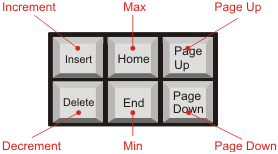

This is a control I made up for the TX81Z Programmer. It's just a scroll bar with a little readout that tells you what value it's set to. It actually turned out to be kind of complicated the way it works, but using its scroll bar ought to be easy enough. When you click on an LCD control, the readout will display in inverted colors and the scroll bar thumb will blink to show it has the input focus. When you change the value, it will send a MIDI message to the TX81Z immediately, so you can hear the results.
Note
You won't always hear the result immediately, even though the parameter value has been changed in the TX81Z. This is due to the way the synthesizer works or even due to quirks in the TX81Z. Some parameters don't take effect until the next note-on MIDI message, like the output level of an operator. Some parameters don't affect the sound at all because of other parameter settings. For example, when the decay one level (D1L) of an envelope is set to its highest setting, 15, then the decay one rate (D1R) will have no effect, because in this situation the decay level is set to the same level as the attack level (which is not editable - it's always set to 15), so the once the envelope reaches the attack level, it is considered to have already decayed to the decay one level. Consequently, the decay one rate has no effect.
You can type the value into an LCD control. This is where it gets kind of confusing. There are actually three different types of LCD controls: numeric LCDs with scroll bars, text LCDs with no scrollbar, and text LCDs with scrollbars, which I call "list LCDs".
Numeric LCDs can display digit characters and positive and negative signs. When you first move the focus to the control, it will go into a mode where the first valid key you type will replace everything in the control. This is done so that you can click on it, type a '1', for example, and it will set the control to 1. After that first key is typed, it will go into a mode where each digit you type shifts the digits to the left and the new digit is inserted on the right. If it stayed in the previous mode, you wouldn't be able to type in a two digit number. But this shifting mode has a problem of its own: to type in a one digit number in this mode, you have to type in a zero first, unless the range of the control constricts the shifted value. For example, if you go to set the attack rate, the range of it is 0 to 31, so if the current value is 4, and you want to set it to 1, the control will try to shift the 4 over and add the 1 to it. But 41 is out of range for the control, so it gets rid of the 4 and sets the control to 1. If you then wanted to set the control to 2, you might try to type a 2. This will set the control to 12, because 12 is a valid value for the attack rate. If you tried typing 2 again, it would set the value to 22. To set the value to 2 in this situation, you have to type a zero first, then a 2.
You can also use the backspace key to remove the rightmost digit from the LCD (it divides the value by 10 and rounds it down).
Text LCDs are used to enter text. They don't have a scrollbar and they are just used for entering text. The voice name is an example of a text LCD.
List LCDs are kind of an experimental feature. They are used to select a value from a list of text strings. For example, the Note Switch in the system setup editor uses a list LCD and it has three values that you can select from: "all", "odd", or "even". List LCDs are very similar to numeric LCDs in that they both have scrollbars and you can type values into either of them. But there are differences in the way the keyboard input is handled and it might be confusing to type into a list LCD when it looks like a numeric LCD. The simplified frequency selection LCDs look like numeric LCDs, but they are actually list LCDs because the list of possible frequencies is not contiguous, so a numeric LCD wouldn't work very well. The reverb rate LCD is also a list LCD because of the "off" setting.
List LCDs do a textual search of the possible values that the LCD can have, so typing works differently than for the numeric LCDs. You can set a value by typing it in, but much of the time you won't have to type in the entire value string. For example, in the reverb rate LCD typing the letter O will immediately set it to 'off'. It will beep if you try to type an F afterwards, because no value starts with an F. For something like the simplified frequency LCDs, which allow you to set the frequency directly, typing 3 will not set the control immediately, because there are a few possibilities that begin with 3. Once you type the first character of a value, there are two possible ways to proceed. You can either continue typing the value by typing a period, or you can step through all of the values that start with 3 by pressing 3 again. But the feature turned out to complicate the typing quite a bit (and I might take that stepping feature out sometime in the future) For example, in the simplified frequency selectors for frequency ratios, if you type a 2, and then type 2 again to match the next value that starts with 2, it will match 22, and if you continue typing 2 it will only match values that begin with 22. In this particular case it's best to use the period to match all of the values that start with '2.'.
Note that for list LCDs, every character you type will advance the value by one, as long as it matches something. If you reach the value you want you can press Enter or Escape to finalize the value.
You can also use the backspace key when you're typing in a value.
The six editing keys above the arrows can be used the change the values in a numeric LCD control. These are used a little differently than in other programs, as I have redefined them to make it easier to use the keyboard with LCDs. Here is a chart of how they are used:

Of the six, the three top keys increase the value and the three bottom keys decrease the value.
Insert and Delete change the value by one. They do the same thing as clicking on the scroll bar arrow buttons. Their names make for convenient mnemonics, where INsert stands for "INcrement", and DElete stand for "DEcrement". Pretty spiffy.
Home and End set the LCD to its minimum or maximum value respectively.
Page Up and Page Down change the value by "a few". These keys perform the same function as clicking above or below the scroll bar thumb. The exact amount varies from control to control. Some of them change by a fixed value, and some of them change by whatever value I thought was most convenient. For example, on the Transpose LCD in the voice editor, these keys will change the setting by one octave (unless changing it by an octave would set the control out of its minimum or maximum range, in which case it is set as far as it will go).
You can also press shift before you drop it if you want to swap values between the two.